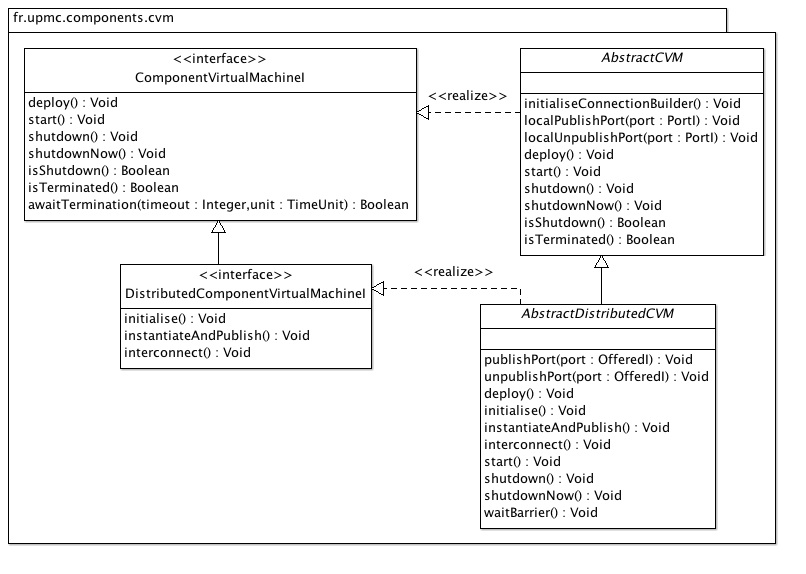

Component virtual machines for both single computer and distributed deployments.
| Licence |
|---|
|
Copyright Jacques Malenfant, Sorbonne Universite. Jacques.Malenfant@lip6.fr This software is a computer program whose purpose is to provide a basic component programming model to program with components distributed applications in the Java programming language. This software is governed by the CeCILL-C license under French law and abiding by the rules of distribution of free software. You can use, modify and/ or redistribute the software under the terms of the CeCILL-C license as circulated by CEA, CNRS and INRIA at the following URL http://www.cecill.info. As a counterpart to the access to the source code and rights to copy, modify and redistribute granted by the license, users are provided only with a limited warranty and the software's author, the holder of the economic rights, and the successive licensors have only limited liability. In this respect, the user's attention is drawn to the risks associated with loading, using, modifying and/or developing or reproducing the software by the user in light of its specific status of free software, that may mean that it is complicated to manipulate, and that also therefore means that it is reserved for developers and experienced professionals having in-depth computer knowledge. Users are therefore encouraged to load and test the software's suitability as regards their requirements in conditions enabling the security of their systems and/or data to be ensured and, more generally, to use and operate it in the same conditions as regards security. The fact that you are presently reading this means that you have had knowledge of the CeCILL-C license and that you accept its terms. |
The package fr.sorbonne_u.components.cvm defines the concept of
component virtual machines (CVM) in the component model. CVM deploy and run
applications, themselves seen as interconnection of components. Currently,
two different kinds of CVM are proposed:
The major difference between the two kinds of CVM is the fact that DCVM use Java RMI to interconnect distant components and have to use external registries to publish the component ports, while in local CVM a simple local registry and only Java references are used to interconnect components, so that everything runs within a single JVM. DCVM also use XML configuration files to make all of their sites aware of each others and of the overall deployment of the application: components which run on a set of JVM, which in turn execute on a set of hosts. Each site of a DCVM also keeps track of its locally deployed components and also provides the methods to publish and unpublish ports on registries.
Application can be deployed statically, or partly statically and partly
dynamically. In a fully statically deployed application, all of the components
are created and interconnected at once, when the CVM is starting. In a partly
dynamically deployed application, only a share of the components are statically
created and interconnected, others are created and interconnected during the
execution of the application. Tools for the dynamic component creation and
connection are described in the package
fr.sorbonne_u.components.cvm.pre.dcc. Note that at least some
components must be statically deployed and started if an application ever want
to reach execution and be able to dynamically create and connect new components.
The extreme case would be an application that would create only one static
component responsible for the direct or indirect creation and connection of
every other components.
Local CVM have essentially two methods helping in the static part of application
deployment. The deploy method statically instantiates components
and performs the static interconnections among them through their ports using
connectors. The start method is the entry point to launch the
application, a kind of main method for component-based applications.
It usually performs some initialisations and then calls the start methods of
every statically deployed components (done by the base definition of the method
in the AbstractCVM implementation).
DCVM further decompose the deploy method in three phases:
initialise that sets up everything that is needed
locally, and the standard RMI registry reference;instantiateAndPublish that statically creates the
components that are local to the current part of the virtual machine and the
publication of their ports on the RMI registry; and,interconnect that statically interconnects the
static components that need to, relying on the availability of all of their
required ports on the registry before its execution.
This decomposition enforces (in AbstractDistributedCVM
implementation of deploy) an explicit distributed synchronisation
between the three phases executed on the different sites. Indeed, to
interconnect components, clients must find in the registry the information about
the ports of the provider components. The three phases protocol enforces that
and avoids deadlocks that could occur if the publications and interconnections
were badly intertwined. So, a distributed application is launched by executing
a site of the DCVM within each of the Java virtual machines on which it must
deploy. One virtual machine per host deploys this host RMI registry, others
just connect to it. Each site of the DCVM has access to the XML configuration
file giving all of the identifiers of the hosts used for the deployment and
creates only the components that must be deployed on the current site.
Here is a UML class diagram of the package:
